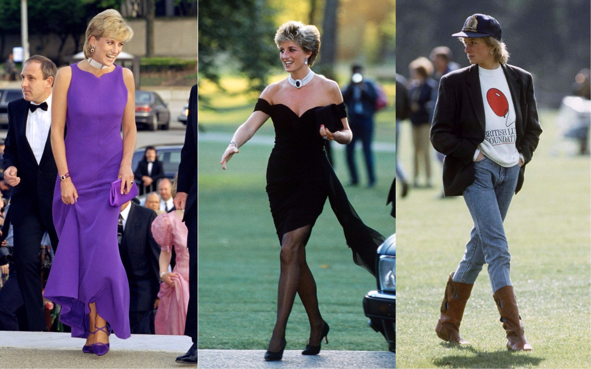

Princess Diana's Best Looks

It’s no secret that Princess Diana was a major style icon—and remains one to this day.
Her style influenced onlookers in the 1980s and 1990s, and continues to be an inspiration to fashionistas long after her tragic death.
Never one to shy away from a style, Princess Diana braved a smorgasbord of trends that would
no doubt be deemed inappropriate for the Duchess of Cambridge to wear today, such is the new unspoken royal dress code.